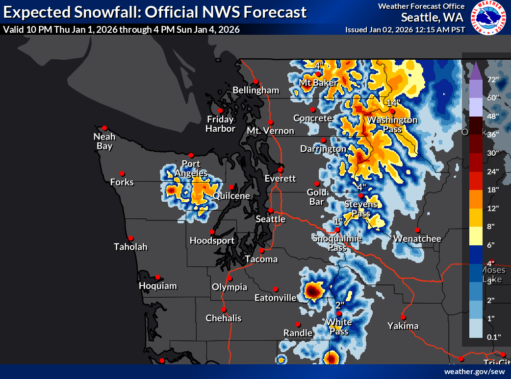
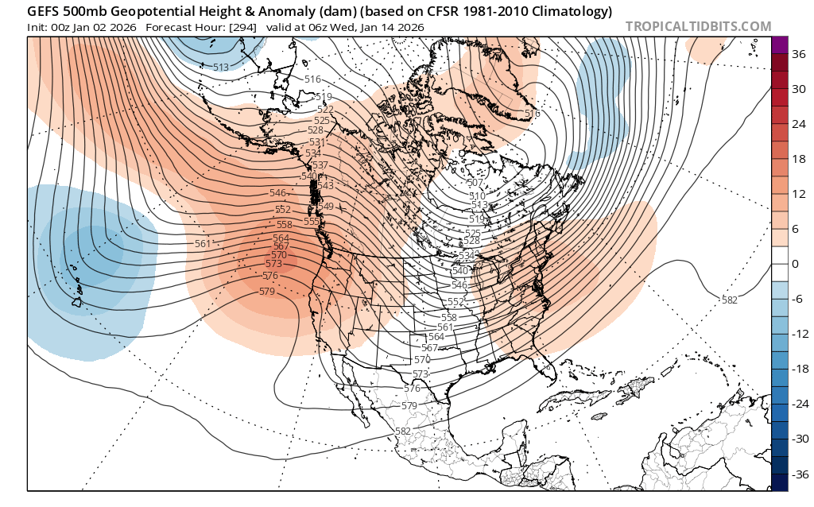

🎊 Happy New Year! How much snow will the start of 2026 bring?
Welcome to The Dendritic Growth Zone!
🧙♂️ Forecast Discussion
Short-term (Friday-Sunday)
Happy new year from us at Cascade Mountain Weather! We wish you all a powder filled 2026!
On Friday, we should see some scattered, relatively light precipitation over the mountains as remnant subtropical moisture from a decayed shortwave trough moves up from the south. Snow levels will be high on Friday, around 5000-6000ft. Watch out for freezing rain potential as plenty of cold air is still pooled at lower elevations east of the Cascade crest, particularly at Stevens and Snoqualmie Passes. As this moisture moves through, an upper-level (500mb) closed low will be spinning its gears off the US West Coast. Saturday will feel quintessentially Cascadian as this low moves onshore with plenty of cloud cover, mild temperatures, and more off-and-on precipitation. Skiing will likely be quite poor in the backcountry Friday and Saturday as high freezing levels combine with the scattered precipitation to rain on the snow at most mountain locations.

Saturday night into Sunday expect to see a heavier slug of moisture and precipitation enter the scene as positive vorticity advection from a shortwave trough will provide synoptic-scale lifting across Western Washington. Without going into too much of the math, vorticity is a measure of spin (large-scale in this case, think 100s of miles wide). Through some fun fluid dynamics math, advecting or increasing the spin over an area will cause upward motions in the atmosphere. This process helps squeeze rain and snow out of airmasses in a somewhat similar capactity to how air forced over mountains will rise and produce more rain or snow. When we speak of "troughs", "shortwaves", "disturbance", or low pressure system, we often times see this vorticity increase --> more rising air --> more precipitation process unfold.
Medium-Term (Monday-Wednesday)
Though they differ slightly in the timing of individual storms, both the European and American (GEFS) model ensembles have a clear cooler trend starting Sunday through at least Thursday. By next Thursday, we will likely see freezing levels drop back below our lowest pass levels (namely Snoqualmie Pass). Precipitation totals during this Mon-Wed period vary depending on the modeling system you look at. The Euro is quite excited about an atmospheric river roughly next Wednesday while the GFS is not. As a result, the Euro has quite a bit more precipitation. Time will tell who will prevail. Either way, I expect scattered precipitation here and there throughout next week which likely will result in some decent accumulation by the following weekend.
🧙🔮🧙♂️ Reading the crystal ball - 7+ day outlook
We're starting to see some agreement between ensemble systems favoring strong and persistent high pressure for several days somewhere around 13 January. Both the ECMWF and GEFS agree with this timing, though shifts in its location east/west or north/south will make a significant difference in what that means for skiing and riding in Washington. The image below shows this.

🗣️ Word of the Week: Vorticity
What it means: Vorticity measures the rotation of the atmosphere. Positive vorticity advection (PVA) is when spin is transported into a region, forcing air to rise.
Why you care: Positve vorticity advection forces air upwards which helps wring moisture out of the atmosphere, increasing clouds and precipitation. This is a reason why troughs—features rich in PVA—often coincide with heavier mountain snowfall.
❄️ Snowfall
Weekend Snow Accumulation Forecast
| Site | Through 4am Saturday | Through 4am Sunday | Weekend Snow Accumulation (4pm Thursday through 4am Monday 5 Jan) |
|---|---|---|---|
| Mt. Baker (4500') | 0-4" | 6-10" | 12-18" |
| Washington Pass | 2-4" | 8-12" | 10-16" |
| Stevens Pass (4500') | 0" | 2-6" | 4-8" |
| Hurricane Ridge | 0" | 0-4" | 6-12" |
| Blewett Pass | 0-1" | 1-4" | 2-6" |
| Snoqualmie Pass | 0" | 0" | 0-4" |
| Crystal (5000') | 0" | 2-6" | 6-12" |
| Paradise | 0" | 4-8" | 12-18" |
| White Pass (5000') | 0" | 1-4" | 4-8" |
🧊 Freezing Level
- Friday: 5500-7000 feet
- Saturday: 5500-6500 feet
- Sunday: 4500-5500 feet in the morning, lowering to 3500-4000 by the evening
🎿 Our Recommendations
Best Choice This Weekend: Wait until Sunday Afternoon
Snow surfaces may come in many forms of bad by Saturday after many days without new snow. If you're itching to get out anyway, don't let me stop you but new snow Sunday will significantly improve skiing and riding conditions.
Runner-Up: Baker Backcountry
With yet another north-south temperature gradient over Washington this weekend, our friends to the north may avoid some of the rain in addition to being more favored by the Sunday precipitation. And if you do, you might see me out there Sunday!